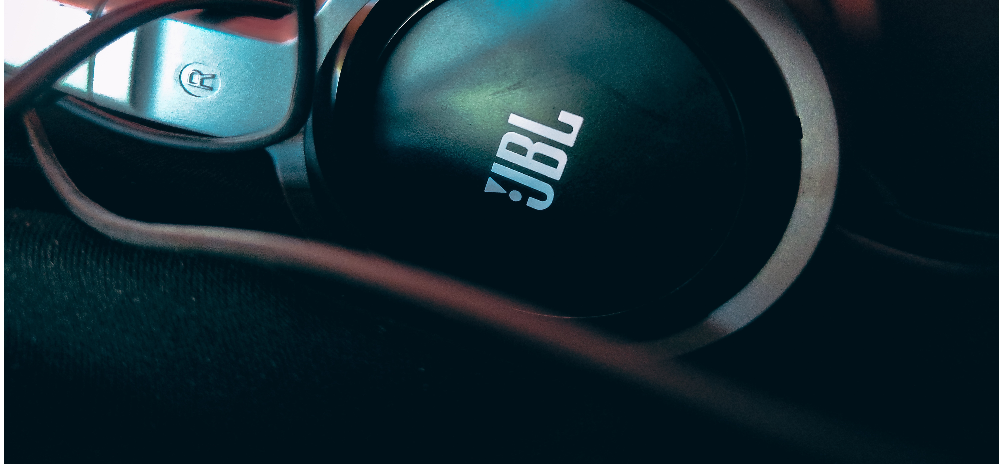

PERIFÉRICOS REDLION
REDLION es el espacio donde podrás encontrar los mejores periféricos del mercado en un solo lugar desde teclados convencionales, mecánicos, ratones, audífonos, etc.
• Diseño Compacto y Espacido en Tipo-C: Diseño de teclado mecánico de 61 teclas que ahorran espacio y libera espacio en su escritorio.
• Retroiluminación en Color Amarillo Aólido y Retroiluminación de 18 Modos: La luz del teclado mecánico para juegos de 61 teclas tiene 18 modos de operación de retroiluminación.
• Experiencia de Escritura Cómoda y Anti-Ghosting completo de 61 Teclas: Teclado mecánico de interruptores Azules clásicos, que responde rápido sin demoras.
• Amplia Compatibilidad: El teclado mecánico es compatible con Windows 2000 / XP / Vista / 7/8/10 / Mac OS.
• Uso simultáneo de teclas para mayor rendimiento: Cada tecla de G213 está optimizada para mejorar la experiencia táctil y ofrecer una respuesta superrápida.
• Zonas de iluminación RGB brillantes y nítidas: Un teclado moderno con cinco zonas de iluminación individuales con un espectro de aproximadamente 16,8 millones de colores.
• Resistente a salpicaduras y duradero: G213 Prodigy se ha creado y sometido a pruebas con derrames de 60 ml de líquido.
• Reposamanos integrado y patas ajustables: El ajuste de ángulo en dos niveles te permite colocar el teclado en la posición ideal.
• Controles multimedia específicos: G213 posee controles multimedia específicos que se pueden usar para reproducir, poner en pausa y silenciar música y videos al instante.
• Exclusiva barra de luz y efectos de iluminación dinámicos RGB.
• Estructura duradera y sólida.
• Teclas silenciosas y rápidas con funcionalidad anti-ghosting.
• Resistente a los derrames.
• Controles multimedia especiales.
• Sensor de alta precisión con DPI ajustable hasta 8000 DPI.
• Iluminación RGB LIGHTSYNC.
• LIGHTSYNC RGB personalizable con efecto de onda de color personalizable con aproximadamente 16,8 millones de colores.
• Diseño de 6 botones probado con el tiempo con botones programables usando Software Logitech G HUB.
• Iluminación RGB Brillante & Personalizable: El ratón para juegos con retroiluminación RGB con 7 modos de retroiluminación diferentes.
• Experiencia de Juego Profesional Los 7 botones programables permiten una productividad y eficiencia superiores para satisfacer todas sus necesidades de juego.
• SENSACIÓN A LA MANO EXTREMADAMENTE CÓMODA El mouse mide 11x6.5x3cm, el área de la palma posterior que se adapta perfectamente a la mano brinda mucho más control sobre ella.
• 5 NIVELES AJUSTABLES HASTA 7200 DPI 7 Botones sensibles y con 5 DPI ajustables, cambia los niveles de DPI entre 1200, 2400, 3500, 5500 y 7200 para satisfacer sus necesidades especiales con tecnología de seguimiento óptico proporciona alta sensibilidad y seguimiento preciso en una amplia gama de superficies.
• Compatible con sistemas Windows 2000 / ME / XP / 03 / VISTA / 7/8/10 para uso programable y Mac OS para uso normal.
• DISEÑO ERGONÓMICO: El Razer DeathAdder Essential conserva el diseño ergonómico clásico que ha sido un sello distintivo de las generaciones anteriores de Razer DeathAdder.
• 5 botones Hyperesponse: Los botones Hyperesponse programables de manera independiente te proporcionan un control avanzado para una ventaja competitiva.
• Hasta 10 millones de clics: Los switches mecánicos de Razer, galardonados en múltiples ocasiones, duran hasta 10 millones de clics, para una vida útil más larga y una fiabilidad total.
• Sensor óptico de 6 400 ppp reales: Permite movimientos de ratón rápidos y precisos que ofrecen un mayor control para las necesidades esenciales de juego.
• Sonido envolvente envolvente 7.1 para audio posicional: equipado con controladores personalizados de 40 mm.
• Diseñado para comodidad todo el día: los auriculares Kraken más ligeros hasta 230 gramos, alrededor de un 40% más ligeros que la competencia.
• Micrófono flexible con cancelación de ruido: un micrófono cardioide reduce los ruidos de fondo y ambiente para una comunicación nítida.
• Construcción duradera: el marco Kraken X es flexible y construido para durar, capaz de soportar el uso diario y sin preocupaciones
• Con diadema de acero durable con cubierta de goma resistente al daño y sistema de cable desmontable.
• Tiene un diseño sobre la oreja con almohadillas de espuma y diadema cubiertas de tela.
• Micrófono unidireccional con funcionalidad flip-to-mute; el ajuste de volumen en línea proporciona un control óptimo.
• Dispone de controladores de 40 mm adecuados para todo tipo de juegos; compatible con audio de Windows Sonic y Dolby Atmos en Xbox One.
• Los Audífonos A10 presentan audio preciso y de inmersión cumpliendo con las exigencias de los desarrolladores de sonido.
• Plug and Play: Usa una toma de audio de 3,5 mm para entrar en juego fácilmente.
• Audio Excelente Garantizado: Transductores de neodimio de 40 mm, los audífonos G335 ofrecen un sonido nítido que da vida a tu juego.
• Controles Integrados: Usa el control giratorio de volumen en la copa para ajustar el sonido de juegos y música. Voltea el micrófono hacia arriba para silenciarte de manera automática.
• Confort Total: El diseño de diadema con suspensión distribuye el peso y alivia la presión. Las suaves almohadillas transpirables, de espuma viscoelástica y malla deportiva.
• Ligero: Con sólo 240 gramos, los G335 son una versión más pequeña y ligera de los galardonados G733 LIGHTSPEED inalámbricos.
Siempre que busques un periférico acércate a nuestra página web y seguro lo encontraras, con nuevas recomendaciones cada semana y la información más actualizada.